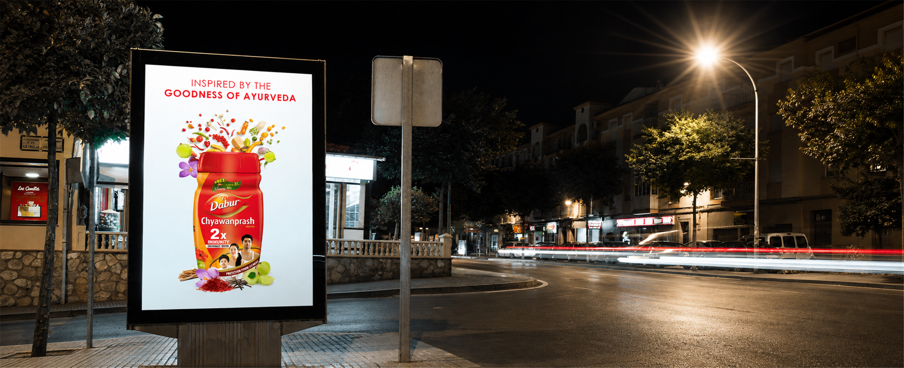
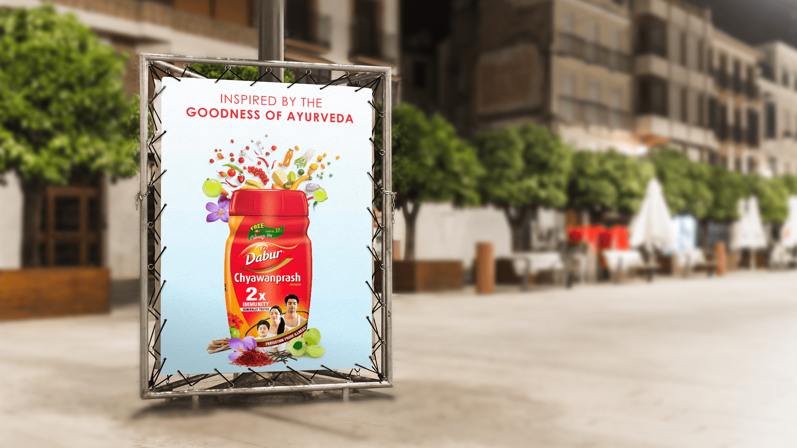
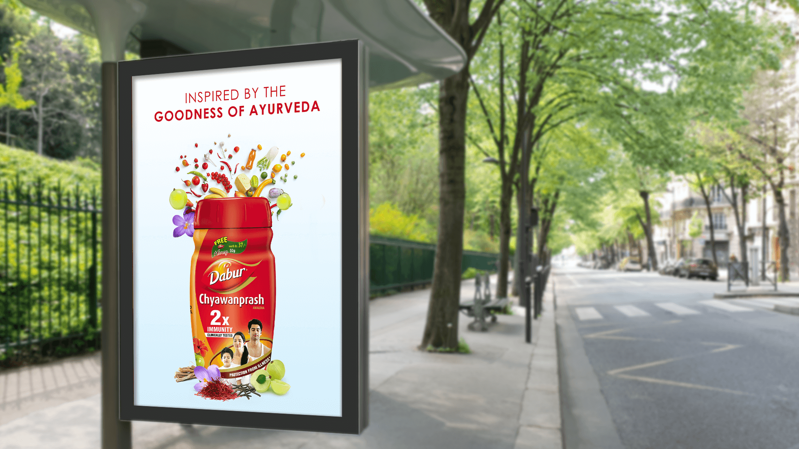

A formulation made from many herbs needed to feel rich and credible without becoming visually dense or difficult to decode.
← Back to workAyurveda, opened up.
Dabur Chyawanprash · Clip-on Print
Ayurveda, opened up.
Protection, made visible.

Project overview
A trusted formulation.
A fresh outdoor expression.
Dabur Chyawanprash is a clinically tested Ayurvedic formulation made with more than 41 Ayurvedic herbs and positioned around immunity, strength and stamina.
The clip-on idea turns that depth of formulation into a single visual moment: the red jar stays unmistakable while a vivid collection of ingredients rises beyond it, making “goodness of Ayurveda” tangible at street-viewing speed.
- Product
- Health Supplement
- Foundation
- Ayurveda
- Expression
- Trusted + Vital
- Application
- Outdoor Print
The communication challenge
Show ingredient depth.
Keep the promise simple.
The familiar red jar and immunity proposition still had to dominate in a fast-moving outdoor environment.
The creative device
The jar holds the promise.
The ingredients reveal it.
Amla, herbs, roots and spices break upward from the pack, translating the formulation into a vivid and immediate ingredient story.
The white field protects clarity. The red jar supplies recognition. The dimensional burst gives the outdoor unit the energy to interrupt attention.
The fast-read system
Trust first.
Depth revealed.
- 01
The jar
The red Dabur Chyawanprash pack creates immediate product recognition.
- 02
The burst
Multiple ingredients make the formulation feel abundant and rooted in Ayurveda.
- 03
The promise
A short headline connects the ingredient spectacle to one clear source of goodness.
The work in context
One formulation.
Two outdoor settings.
Each supplied application appears once and remains fully visible, preserving the complete jar, ingredient burst, clip-on frame and surrounding environment.


The outcome
An old science.
A contemporary interruption.
The system keeps a trusted health-supplement pack at the centre while giving its Ayurvedic formulation a vivid, memorable and outdoor-ready expression.
Pack recognition
The red jar remains the immediate visual anchor.
Ingredient credibility
The ingredient burst makes formulation depth visible.
Outdoor clarity
High contrast protects the message across different environments.
Goodness, gathered.Protection, brought forward.
Need a product story that works at street speed?